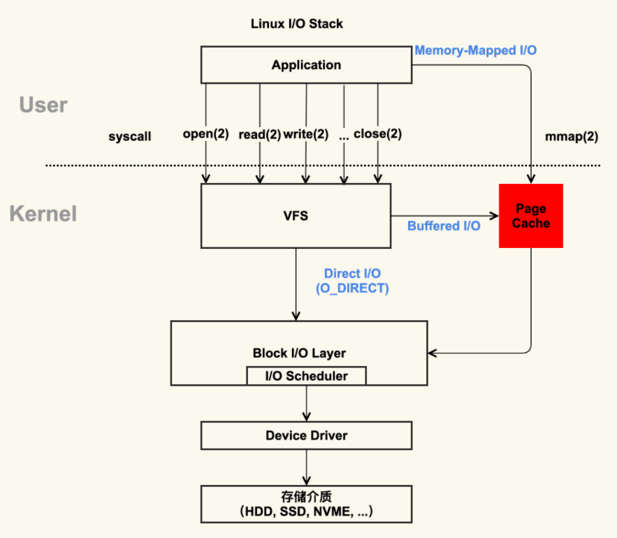
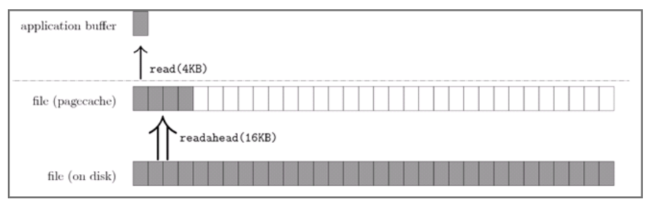
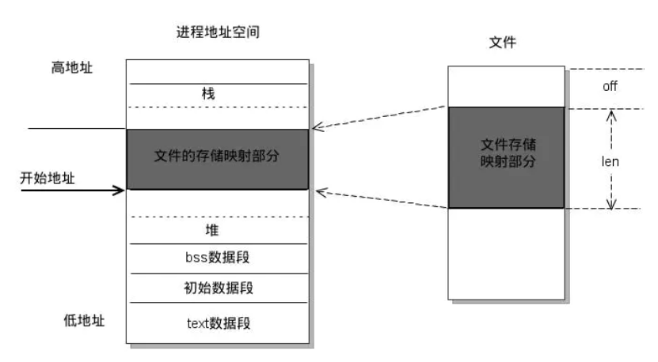

一、 读写缓存Page Cache
Linux对文件读写并不是每次都进行磁盘IO，而是将对应的磁盘文件缓存到内存上，之后对该文件的操作实际上也是对内存的读写。
缓存俗称页缓存(page cache)，而被修改过但还没写入磁盘的页缓存称为脏页(dirty page)。查看页缓存可以通过/proc/meminfo查看：页缓存为Cached，脏页为Dirty。

上图中，红色部分为 Page Cache。Page Cache 的本质是由 Linux 内核管理的内存区域。通过 mmap 以及 buffered I/O 将文件读取到内存空间实际上都是读取到 Page Cache 中。
二、 Linux中 Read、Write的过程
Read
当我们使用read去读取文件时，操作系统会先从缓存中查找对应文件，如果没有找到则产生缺页中断，将文件读取到缓存中，同时用户read过程也会被阻塞。如果命中，则直接读取缓存内容。Write
同理，write调用也会先将数据写入缓存，如果没有找到指定缓存则产生缺页中断，将磁盘文件读取到缓存，write再修改缓存内容。如果命中，则直接写入到缓存。
磁盘回写
- 由pdflush进程定时将脏页写入磁盘，周期为
/proc/sys/vm/dirty_writeback_centisecs，单位是(1/100)厘秒(centi seconds) - 调用fsync()进行回写，这时候系统会唤醒pdflush直到所有的脏页都已经写到磁盘为止
- 内存不足或脏页过多，write系统调用会同样会唤醒pdflush回写
三、 预读取readahead及内存映射mmap
1、 预读取readahead
readahead预读取，其实就是让操作系统将对应的文件读取到缓存，之后read就不会产生缺页中断。缺页中断时操作系统会将磁盘文件写入缓存，此时read过程被阻塞。
如果读取数据量大，可以先进行预读写调用readahead，同时，可以先进行一些其他耗时操作，之后再进行read，那么读取到的文件信息都是已经缓存到内存中的，相当于内存的读取。
操作系统为基于 Page Cache 的读缓存机制提供预读机制（PAGE_READAHEAD）：
- 用户线程仅仅请求读取磁盘上文件 A 的 offset 为 0-3KB 范围内的数据，由于磁盘的基本读写单位为 block（4KB），于是操作系统至少会读 0-4KB 的内容，这恰好可以在一个 page 中装下
- 但是操作系统出于局部性原理会选择将磁盘块 offset [4KB,8KB)、[8KB,12KB) 以及 [12KB,16KB) 都加载到内存，于是额外在内存中申请了 3 个 page

上图中，应用程序利用 read 系统调动读取 4KB 数据，实际上内核使用 readahead 机制完成了 16KB 数据的读取。
2、 内存映射 mmap
通过内存映射的方式，将文件直接映射到进程的地址空间。之后对文件的读写就可以通过指针的方式读取映射的内存空间。
当用户第一次读取文件时会产生缺页中断，操作系统将文件读取到缓存，之后读取就直接读取缓存，那缓存什么时候写回磁盘？这个不用管，操作系统会自动管理。

上图中 mmap()系统调用原理：mmap的作用是映射文件描述符和指定文件的(off_t off)区域至调用进程的(addr,addr *len)的内存区域。
优点：不用调用系统函数read、write减少系统调用开销；内存映射减少了一次内存拷贝，正常read操作是两次数据拷贝，第一次将磁盘写到缓存，第二次是将缓存写入read传递的buffer里。
参考：
Linux的文件读写缓存cache浅析，以及read优化
文件 I/O 简明概述
pdflush的工作原理及cache介绍
共享内存之——mmap内存映射